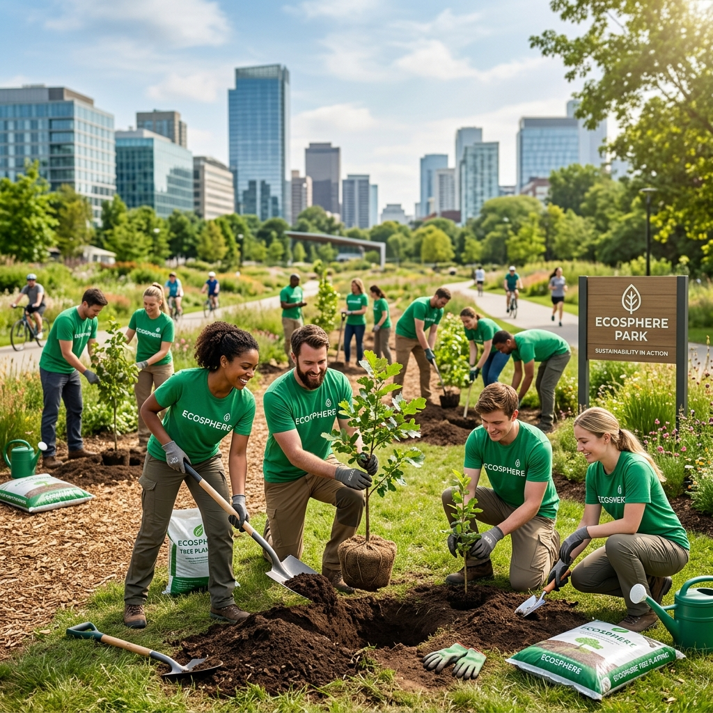
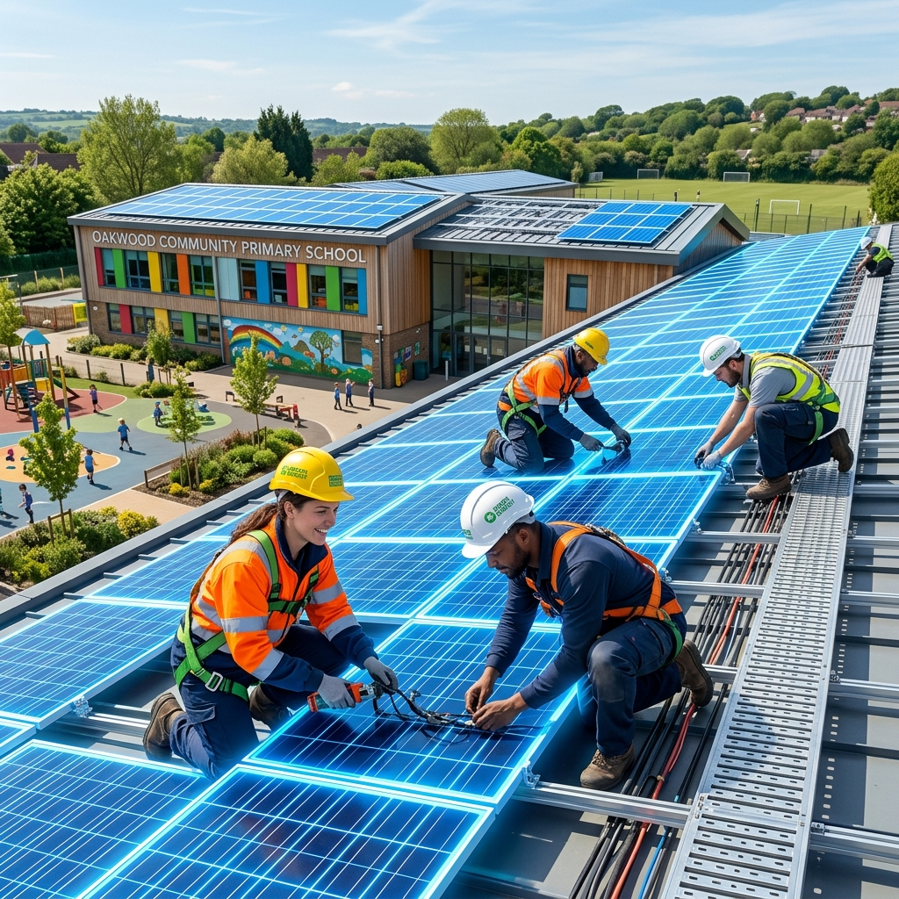
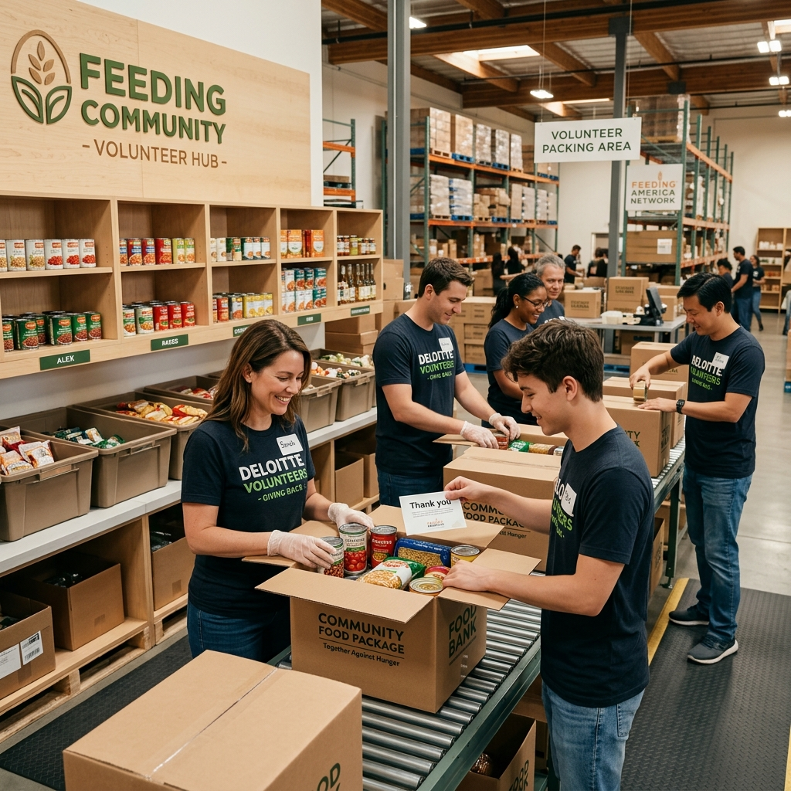

52%
Diversity Index
Inclusion Metric
84%
CSR Participation
Active Volunteers
82%
Employee Wellness
8.2/10 Index
96%
ESG Training Rate
Audited Certificate
Cumulative Volunteer Hours (CSR Actuals vs Path)
Diversity & Inclusion Metrics Matrix
CSR Volunteering Schedule (July 2026)
M
T
W
T
F
S
S
Corporate CSR & Community Milestones
Urban Forestry Canopy Restoration
In partnership with San Jose Forestry Association. 85 employees planted 150 native oak saplings, offsetting future logistics emissions.
Community School Microgrid Installation
Retrofitted solar microgrid battery grids for San Jose Primary School, ensuring 100% clean power capabilities.
Enterprise Regional Food Bank Packing
Volunteered packaging logistics grid lines, organizing 5,000 lbs of meals for underrepresented local sectors.
AI Workforce Sentiment Analysis
Social Pulse
😊
82% Positive
Positive Sentiment
82%
Key satisfaction drivers: solar grid installations visibility, paid CSR volunteer hours, and internal wellness challenge rewards.
Channels scanned: Slack, HR Logs, Anonymous surveys
EcoSphere Active CSR Photo Log



Department CSR Engagement & Training Disclosures
| Department Division | Headcount Employees | ESG Training Rate | CSR Volunteer Hours | Wellness Score | Involvement Status |
|---|